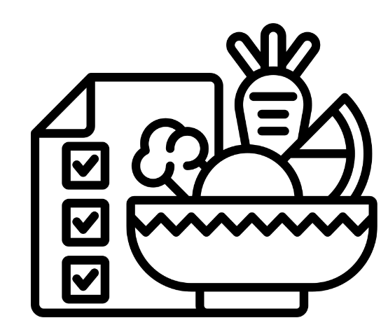

 Sastojci
- 500g brašna
- 300ml mleka
- 2 kašike šećera
- 1 kašika praška za pecivo
- 1/2 kašičice soli
- 100g borovnica

Kremasta čorba od karfiola je savršena opcija za hladnije dane kada želite lagano, ali hranljivo jelo. Bogata vlaknima i vitaminima, ova čorba pomaže jačanju imuniteta i doprinosi osećaju sitosti. Idealna je za sve koji žele zdravo uživanje u svakom zalogaju.
U šerpi, na srednjoj-jakoj temperaturi propržiti crni luk iseckan na kockice i pileće batake. Posoliti ih pa dodati oljušten krompir isečen na kocke i Friglo povrće za đuveč. Dinstati piletinu i povrće 10ak minuta u poklopljenoj šerpi uz povremeno mešanje. Nakon toga dodati sitno iseckani beli luk, pirinač i začine, naliti vodu, pa temperaturu smanjiti na minimum. Nastaviti dinstanje jela u poklopljenoj šerpi sve dok pirinač ne nabubri (10 do 15 minuta).